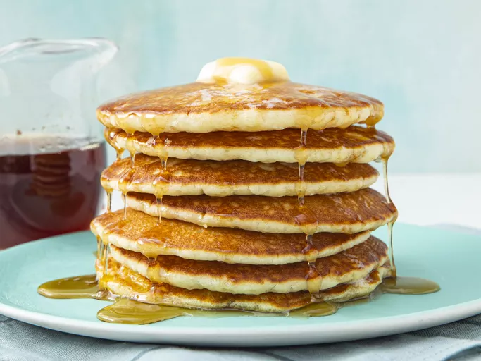

World's Best Pancakes
Ingredients
- 1 cup all-purpose flour
- 2 tablespoons sugar
- 2 teaspoons baking powder
- 1/2 teaspoon salt
- 1 cup milk
- 1 egg
- 2 tablespoons melted butter
- 1 teaspoon vanilla extract
Instructions
- In a large bowl, whisk together the flour, sugar, baking powder, and salt.
- In another bowl, whisk together the milk, egg, melted butter, and vanilla extract.
- Pour the wet ingredients into the dry ingredients and stir until just combined. Do not overmix.
- Heat a non-stick skillet or griddle over medium heat and lightly grease with butter or oil.
- Pour 1/4 cup of batter onto the skillet for each pancake. Cook until bubbles form on the surface, then flip and cook until golden brown on the other side.
- Serve warm with your favorite toppings.